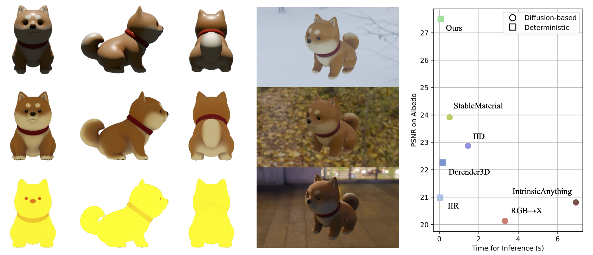

Material decomposition for 3D objects

Decomposing physically-based materials from images into their constituent properties remains challenging, particularly when maintaining both computational efficiency and physical consistency. While recent diffusion-based approaches have shown promise, they face substantial computational overhead due to multiple denoising steps and separate models for different material properties. We present SuperMat, a single-step framework that achieves high-quality material decomposition with one-step inference. This enables end-to-end training with perceptual and re-render losses while decomposing albedo, metallic, and roughness maps at millisecond-scale speeds. We further extend our framework to 3D objects through a UV refinement network, enabling consistent material estimation across viewpoints while maintaining efficiency. Experiments demonstrate that SuperMat achieves state-of-the-art PBR material decomposition quality while reducing inference time from seconds to milliseconds per image, and completes PBR material estimation for 3D objects in approximately 3 seconds.
SuperMat is an image space material decomposition model fine-tuned from Stable Diffusion that efficiently generates high-quality albedo, metallic, and roughness maps simultaneously. It supports single-step inference and end-to-end training. Given a rendered or captured image of an object under an unknown lighting condition from a specific viewpoint, SuperMat generates the corresponding material maps for the model from that same viewpoint.
Given an object with only RGB texture, we first render it from six orthogonal viewpoints. The rendered results are then batch-processed by SuperMatMV for material decomposition. These materials, including albedo and RM, are backprojected into UV space and blended. The blended partial maps are then refined by the UV refinement one-step model and the final material UV maps are generated. This process requires only three inference steps—one for SuperMatMV, one for refining albedo, and one for refining RM-allowing our pipeline to complete the material decomposition of a 3D object in just 3 seconds.
@inproceedings{hong2025supermat,
title={Supermat: Physically consistent pbr material estimation at interactive rates},
author={Hong, Yijia and Guo, Yuan-Chen and Yi, Ran and Chen, Yulong and Cao, Yan-Pei and Ma, Lizhuang},
booktitle={Proceedings of the IEEE/CVF International Conference on Computer Vision},
pages={25083--25093},
year={2025}
}